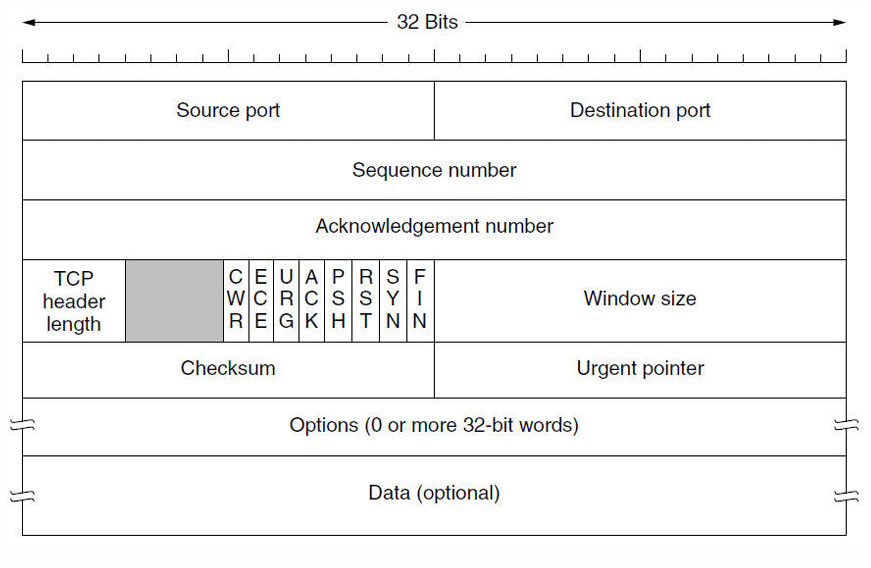
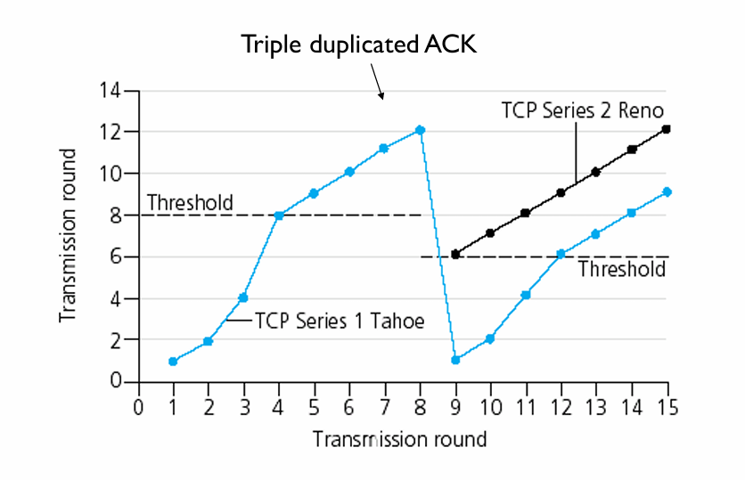

传输层¶
约 4037 个字 3 行代码 2 张图片 预计阅读时间 13 分钟
网络层把分组送到目的主机，传输层进一步解决：主机上的哪个进程接收数据，以及两端进程怎样完成通信。 它运行在端系统中，为应用程序提供端到端服务。
传输层的服务¶
进程寻址与端口¶
IP 地址标识网络接口，端口号区分传输层的应用端点。端口长 16 bit ， TCP 和 UDP 各有自己的端口空间；同一个数字可以分别用于 TCP 和 UDP。
| 端口范围 | 名称 | 常见用途 |
|---|---|---|
| 0～1023 | 熟知端口 | HTTP 80、HTTPS 443、DNS 53 等服务 |
| 1024～49151 | 登记端口 | 为应用登记使用 |
| 49152～65535 | 动态／私有端口 | 可用于临时通信端点 |
操作系统实际使用的临时端口范围由其配置决定。复用把多个应用的数据交给传输层发送；分用则根据端口、地址与协议等信息，把收到的数据交给相应端点。
一个 TCP 连接由 (源 IP，源端口，目的 IP，目的端口) 标识。同一个服务器监听端口可以接受多个客户端连接，它们由不同的端点组合区分。
Socket 接口¶
Socket 是应用使用网络服务的编程接口。面向连接的典型调用顺序是：
服务器：socket → bind → listen → accept → recv/send → close
↑
客户端：socket ────────────────→ connect → send/recv → close
| 操作 | 作用 |
|---|---|
socket |
创建通信端点 |
bind |
绑定本地地址与端口 |
listen |
让端点进入监听状态，设置待接受连接队列 |
accept |
接受连接，获得与该客户端通信的已连接 socket |
connect |
主动请求建立连接 |
send、recv |
发送、接收数据 |
close |
关闭应用持有的 socket |
监听 socket 与 accept 返回的已连接 socket 分工不同：前者继续接受连接，后者服务于已经建立的连接。
为什么还需要端到端控制¶
数据链路层处理相邻节点之间的帧，传输层面对跨越整个网络的通信：分组可能走不同路径、乱序到达，也可能在网络中停留较长时间。因此，确认、序号、超时和连接管理都要覆盖整个端到端过程。
链路层的检错与重传可以减少局部错误的代价；端到端校验与恢复负责检查最终交付的数据。窗口大小则取决于速率、时延和缓存需求，链路层和传输层都可以使用滑动窗口。
UDP¶
UDP （ User Datagram Protocol ，用户数据报协议）在 IP 之上增加端口分用与校验等功能，提供无连接、面向报文的传输。
- 发送前无须建立连接，首部开销小。
- 保留报文边界：应用交来一个报文， UDP 就把它作为一个数据报处理。
- UDP 本身不负责重传、排序、流量控制与拥塞控制；需要这些能力的应用应自行实现，或采用提供相应能力的上层协议。
- 支持单播，也可用于广播与多播。DNS、RTP、RIP 和 QUIC 等都可以使用 UDP。
首部与长度¶
| 字段 | 长度 | 含义 |
|---|---|---|
| 源端口 | 16 bit | 标识发送端口；不需要时可置 0 |
| 目的端口 | 16 bit | 标识接收端口 |
| 长度 | 16 bit | UDP 首部加数据的字节数，最小为 8 |
| 校验和 | 16 bit | 检查伪首部、UDP 首部和数据 |
UDP 首部固定为 8 B。以无选项 IPv4 为例，一个 1500 B 的 IP 分组可携带 \(1500-20-8=1472\) B 的 UDP 数据；更大的 UDP 数据报可能导致 IP 分片。
校验和与伪首部¶
计算校验和时，在 UDP 首部前临时加上伪首部。IPv4 伪首部为 12 B ，包含源 IP、目的 IP、一个全零字节、协议号 17 和 UDP 长度。
- 把 UDP 校验和字段置零。
- 对伪首部、UDP 首部和数据做 16 bit 反码求和；奇数字节长度时补零参与计算。
- 将和取反，填入校验和字段；若计算结果为全 0 ，则传送全 1。
伪首部用于检查数据报是否被交给正确的网络端点，不随 UDP 报文实际发送。IPv4 中校验和字段全 0 表示未使用 UDP 校验； IPv6 中通常必须使用 UDP 校验和。
TCP 的服务与首部¶
TCP （ Transmission Control Protocol ，传输控制协议）提供面向连接、可靠、有序、全双工的字节流服务，一个连接只涉及两个端点。
字节流与 MSS¶
TCP 不保留应用写入的消息边界。发送方连续写入四次 512 B ，接收方可以分多次读，也可能一次读出 2048 B。应用若需要区分消息，应自行规定长度字段、分隔符或固定长度等规则。
MSS （最大报文段长度）指 TCP 段的数据部分上限，不含 TCP 与 IP 首部。常见以太网 MTU 为 1500 B ，若 IPv4 和 TCP 首部均为 20 B ，则对应 MSS 为 \(1500-20-20=1460\) B。存在选项或其他封装时，还要计入相应开销。
首部字段¶
TCP 基本首部为 20 B，含选项时最长为 60 B。

| 字段 | 长度 | 作用 |
|---|---|---|
| 源端口、目的端口 | 各 16 bit | 标识应用端点 |
序号 seq |
32 bit | 本段第一个数据字节的序号 |
确认号 ack |
32 bit | 期望收到对方的下一个字节序号 |
| 数据偏移 | 4 bit | TCP 首部长度，单位 4 B |
| 窗口 | 16 bit | 通告接收窗口；可通过窗口扩大选项扩展 |
| 校验和 | 16 bit | 检查伪首部、TCP 首部及数据 |
| 紧急指针 | 16 bit | 在 URG 有效时指示紧急数据边界 |
| 选项与填充 | 可变 | MSS、窗口扩大、时间戳、SACK 等 |
常见控制位：
- SYN：同步序号，用于建立连接。
- ACK：确认号字段有效。注意区分标志位 ACK 与具体确认号
ack。 - FIN：本端没有更多数据要发送，请求关闭这个方向。
- RST：复位或拒绝相应连接。
- PSH：请求及时向接收应用推送数据，不用来划分应用消息。
- URG：紧急指针有效。
- ECE、CWR：配合显式拥塞通知。
序号与累计确认¶
TCP 对每个方向的字节分别编号，序号按 模 \(2^{32}\) 循环。确认号 ack=n 表示：编号 n 之前的数据已连续收到，接下来期望 n。
根据序号判断数据量
A 连续发送两个普通数据段，序号分别为 90 和 110 ，则第一段携带 \(110-90=20\) B 数据。
若第一段丢失、第二段先到，且 B 此前正等待字节 90 ，则累计确认号仍为 90。即使后面的字节已缓存，也要等缺口补齐后才能推进累计确认。
SYN 和 FIN 各占用一个序号，纯 ACK 不占用序号。普通数据段若 seq=x、携带 \(L\) B ，则下一个数据字节的序号为 \(x+L\)；若同段还有 FIN ，还要再加 1。
接收端可以利用 SACK （选择确认）选项报告已经收到的不连续字节块，帮助发送端减少不必要的重传；累计确认号仍指向最前面的缺口。
TCP 连接管理¶
三次握手¶
以客户端 A 主动连接、服务器 B 被动监听为例，双方初始序号分别为 x、y ：
| 次序 | 方向 | 主要字段 | 状态变化 |
|---|---|---|---|
| 第一次 | A → B | SYN=1, seq=x |
A 进入 SYN-SENT |
| 第二次 | B → A | SYN=1, ACK=1, seq=y, ack=x+1 |
B 进入 SYN-RECEIVED |
| 第三次 | A → B | ACK=1, seq=x+1, ack=y+1 |
A 进入 ESTABLISHED ； B 收到后进入 ESTABLISHED |
第三次握手可以携带数据；若不携带数据，就不额外消耗序号。三次交换使双方同步初始序号，并确认通信能够双向进行；对旧连接请求的处理也需要最后一次确认，避免仅凭迟到的请求建立无效连接。
四次挥手与半关闭¶
TCP 的两个方向分别关闭。假设 A 先关闭，且下表中的 FIN 均不携带数据：
| 次序 | 方向 | 主要字段 | 主要状态 |
|---|---|---|---|
| 第一次 | A → B | FIN=1, seq=u |
A ： FIN-WAIT-1 |
| 第二次 | B → A | ACK=1, ack=u+1 |
B ： CLOSE-WAIT ； A 收到后为 FIN-WAIT-2 |
| 第三次 | B → A | FIN=1, ACK=1, seq=w, ack=u+1 |
B ： LAST-ACK |
| 第四次 | A → B | ACK=1, seq=u+1, ack=w+1 |
A ： TIME-WAIT ； B 收到后关闭 |
第二次与第三次之间是半关闭： A 已发完，但仍能接收 B 尚未发完的数据。若 B 已无数据要发，它的 ACK 和 FIN 可以合并，因此释放连接不必总是恰好四个报文段。
主动关闭方通常在 TIME-WAIT 等待 2MSL 后关闭：一方面保留重发最后 ACK 的机会，另一方面让旧连接中的报文在网络中消失。MSL 是报文段最大生存时间。
TCP 的可靠传输与流量控制¶
发送缓存、接收缓存与窗口¶
发送方把未确认的数据保留在发送缓存中，以便需要时重传；接收方缓存到达的数据，按序交给应用。
接收窗口 rwnd表示接收方允许发送的字节范围；拥塞窗口 cwnd反映发送方对网络承载能力的限制。发送方可保持的在途数据量受两者共同约束：
若当前已有 \(F\) 字节发出但未确认，可继续发送的数量最多为 \(\max(0,W-F)\)。窗口是允许范围，不意味着每次发送都必须把它填满。
接收方通告零窗口后，发送方暂停普通数据发送，并通过持续计时器与零窗口探测了解窗口是否重新打开，避免窗口更新报文丢失使双方一直等待。
小数据段与糊涂窗口综合征¶
发送方一次只写入很少数据，或接收方每次只腾出很小缓存，都可能使大量短段占用网络。
- Nagle 算法：有小数据尚未确认时，先合并后续小块；等确认到达或积累到足够数据后再发。
- 接收方的避免策略：不要刚腾出一点空间就通告极小窗口，等待达到合适阈值后再更新。
这两种策略分别从发送端与接收端减少短段。交互应用还需要在等待时间与封装效率之间取舍。
重传超时与 RTT 估计¶
固定超时值难以适应不同路径。TCP 根据 RTT 样本更新平滑往返时间 SRTT与偏差估计 RTTVAR。对新样本 \(R\)，先使用旧 SRTT 计算偏差：
忽略时钟粒度、上下限等细节时，超时估计为：
若重传后才收到确认，难以判断它确认的是原段还是重传段。Karn 算法避免用这类有歧义的样本更新 RTT ；发生超时后，对 RTO 进行指数退避。时间戳选项可以帮助区分相应发送。
TCP 拥塞控制¶
慢启动与拥塞避免¶
经典 TCP 用 cwnd 控制在途数据，以 ssthresh（慢启动阈值）区分增长阶段。下面按满窗口发送、每个数据段都有一个新确认、无丢包的简化模型分析，窗口用 MSS 计量：
| 阶段 | 每收到一个确认新数据的 ACK | 约一个 RTT 后 |
|---|---|---|
| 慢启动 | cwnd 增加 1 MSS |
窗口近似翻倍 |
| 拥塞避免 | cwnd 增加 \(\mathrm{MSS}^2/\mathrm{cwnd}\) |
窗口约增加 1 MSS |
当 cwnd < ssthresh 时采用慢启动；大于阈值时采用拥塞避免。等于阈值时按题设约定处理。传输轮次题常从 1 MSS 开始，得到 1、2、4、8…… 的慢启动序列。
数据充足且接收窗口不限制时，平均发送速率可近似写成 \(\mathrm{cwnd}/\mathrm{RTT}\)。这里 cwnd 若用字节表示，所得速率为 B/s。
快重传与快恢复¶
接收方发现缺口时，可以反复确认当前期望的序号。发送方收到 3 个重复 ACK后，就重传缺失报文段，不必一直等超时，这叫快重传。三个重复 ACK 是在原有相同确认之外再出现三次。
超时与重复 ACK反映不同的反馈状态：前者迟迟得不到足够确认，后者说明后续数据仍在到达。经典算法据此采取不同的窗口收缩方式。
| 事件 | TCP Tahoe | TCP Reno |
|---|---|---|
| 超时 | 降低 ssthresh，cwnd 回到 1 MSS ，重新慢启动 |
同样重新慢启动 |
| 3 个重复 ACK | 快重传后，cwnd 回到 1 MSS |
快重传并进入快恢复，避免回到 1 MSS |
按传输轮次画图的简化模型：满窗口发送时，将 ssthresh 置为丢包前窗口的一半； Reno 在快恢复结束后把 cwnd 置为新阈值，继续线性增长。例如窗口为 12 MSS 时触发快重传，恢复后从 6 MSS 继续增长。
Reno 快恢复中的临时窗口
细看快恢复过程，阈值按在途数据量减半，且至少为 2 MSS ；收到第 3 个重复 ACK 时，暂把 cwnd 设为 ssthresh + 3 MSS。后续每个重复 ACK 可临时增加 1 MSS ，以反映又有数据离开网络。收到覆盖相应恢复数据的新确认后，再把 cwnd 收回到 ssthresh，进入拥塞避免。
因此，轮次图中的“减半后线性增长”描述的是恢复后的窗口，分析逐个 ACK 的变化时还要计入这段临时调整。

带宽时延积与 BBR¶
把路径想成一条可以容纳在途数据的管道。若瓶颈带宽为 \(B\)、往返传播时间为 \(T\)，填满路径大约需要 \(B\times T\) 的数据。继续增加在途量，常会使数据积压在瓶颈队列中，排队时延随之增长。
BBR通过估计瓶颈带宽与往返传播时间，调整发送节奏和在途数据量；其基本思路是建立路径模型，而不是只在丢包后缩小窗口。这里要把无排队时的传播时间与包含排队的实际 RTT 区分开。
基于传输服务的协议¶
RPC¶
RPC （ Remote Procedure Call ，远程过程调用）让客户端以类似本地函数调用的方式请求远程服务：客户端桩打包参数，服务器桩解包并调用过程，再把结果返回。
RPC 可以建立在 TCP 或 UDP 等传输服务之上。参数需要统一的编码规则；本地指针不能直接拿到另一台机器上使用。发生超时或服务器崩溃时，还要处理“请求没执行”与“执行了但回复丢失”的区别。
例如，先确认再持久化可能在崩溃时丢失已确认操作；先持久化再确认，又可能使重试重复执行。应用需要结合请求标识、去重、幂等操作或事务来定义完成语义。
RTP 与 RTCP¶
RTP （实时传输协议）常运行在 UDP 之上，用序号识别丢失与乱序，用时间戳支持播放时序，并标明载荷类型与同步源。它提供实时媒体所需的信息，播放端仍需处理丢包与抖动。
RTCP配合 RTP 交换接收质量与同步等控制信息。接收端的抖动缓冲可以平滑到达时间变化；缓冲越深，通常越能容忍抖动，但播放等待也越长。
QUIC¶
QUIC在 UDP 之上实现可靠传输、流量控制、拥塞控制与安全握手，并支持一个连接内的多条流， HTTP/3 使用它传送 HTTP 数据。
TCP 按整个连接的字节流有序交付，一处缺失会阻塞其后的字节。QUIC 把有序交付限制在各条流内：一条流丢失数据，不要求其他独立流等待它补齐；发生丢包的流本身仍要等待缺口恢复。